TECHNOVORE · SÉRIE DU 16 NOVEMBRE 2026
Les trois variantes côte à côte. Clique sur une image pour ouvrir le PNG 4K. Les PSD conservent les textes modifiables ; les scènes restent modifiables dans les sources HTML/SVG.
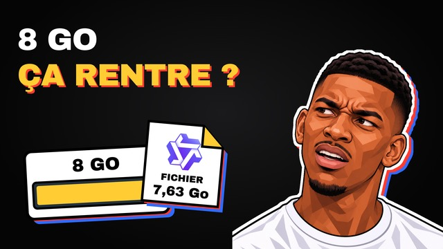
PNG 4K · PSD
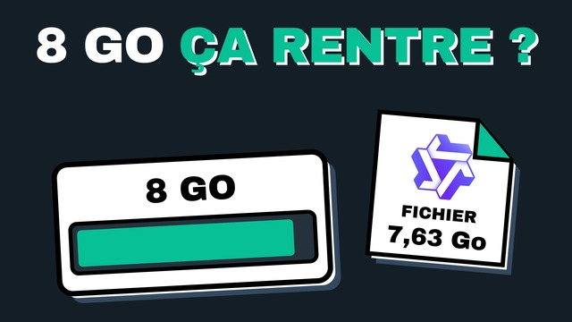
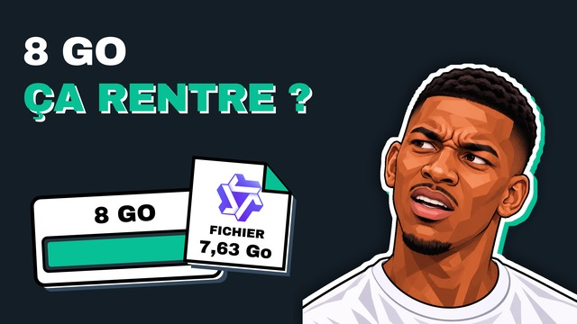
Concept et sources · Critique indépendante · Relecture des logos
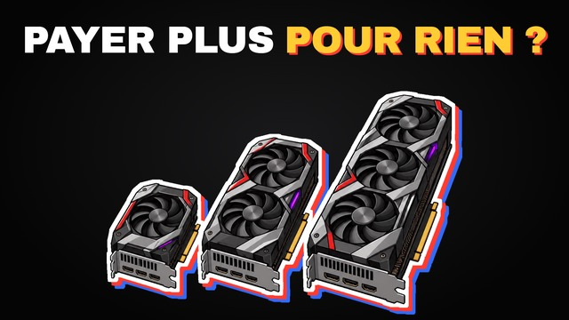
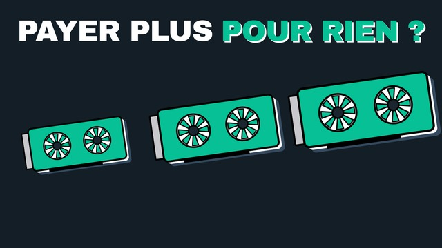
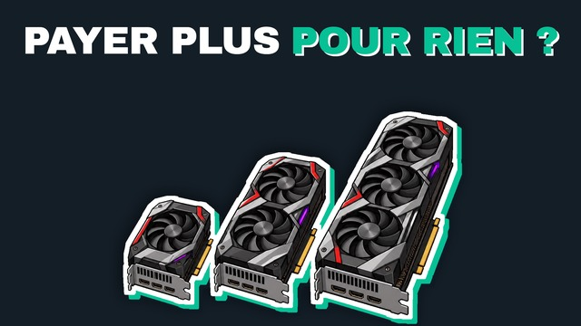
Concept et sources · Critique indépendante
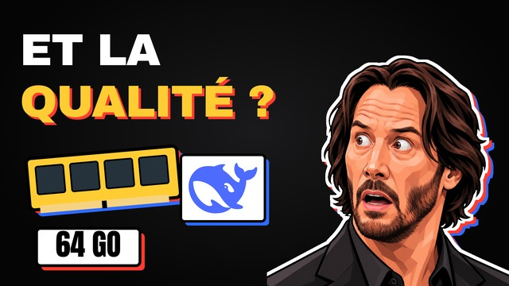
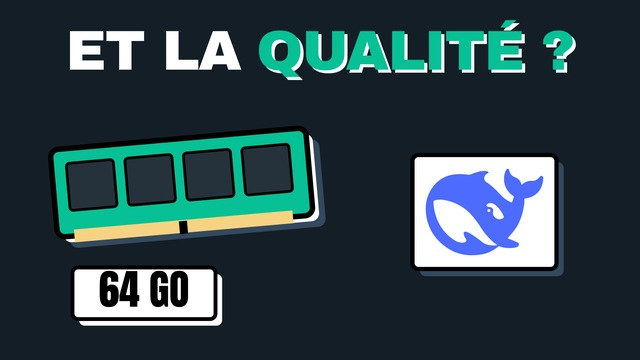
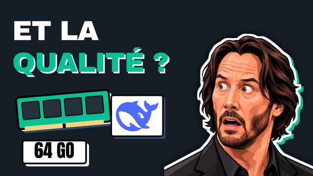
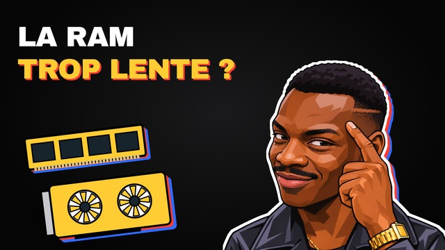
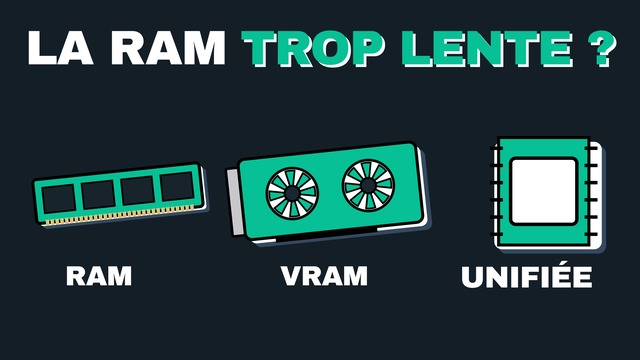
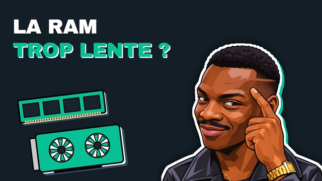
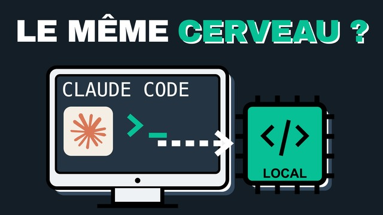
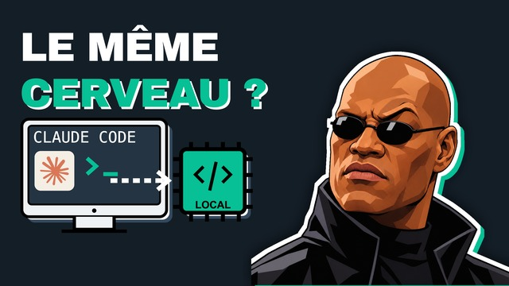
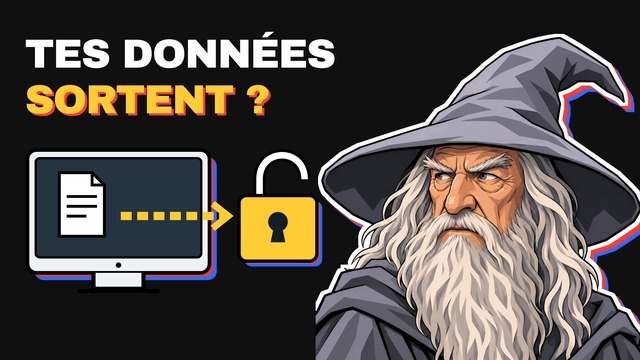
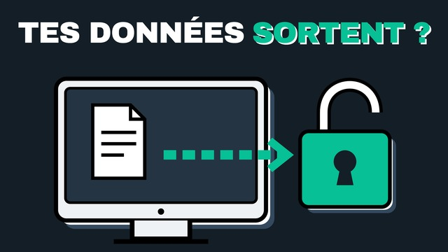
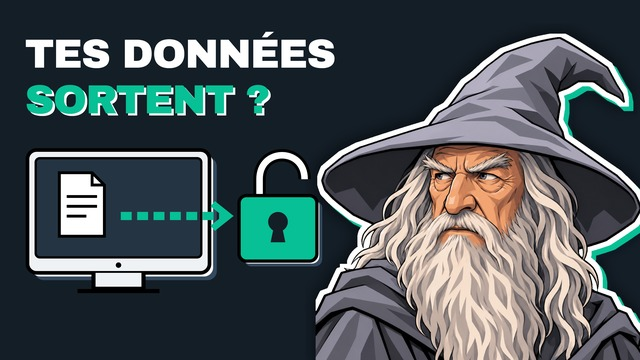
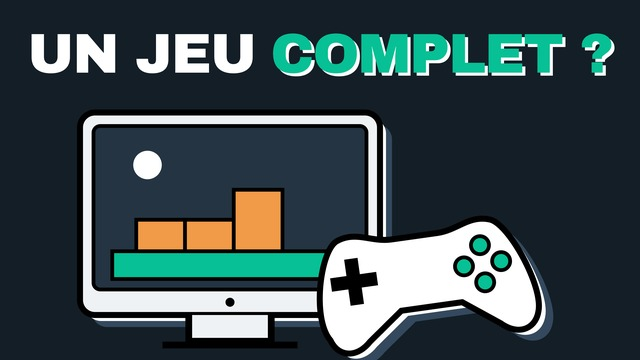
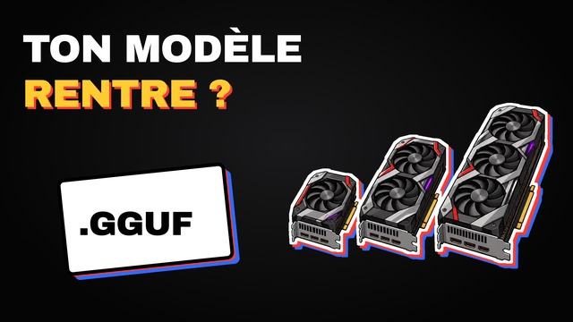
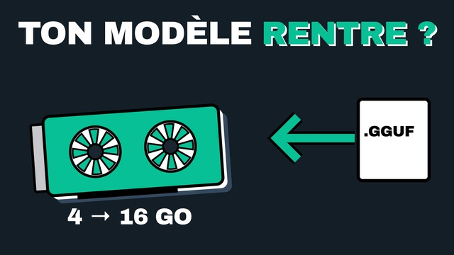
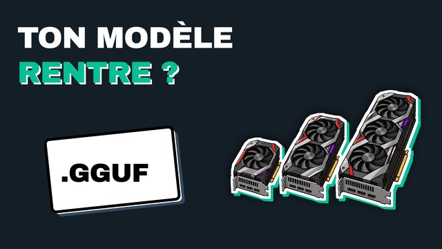
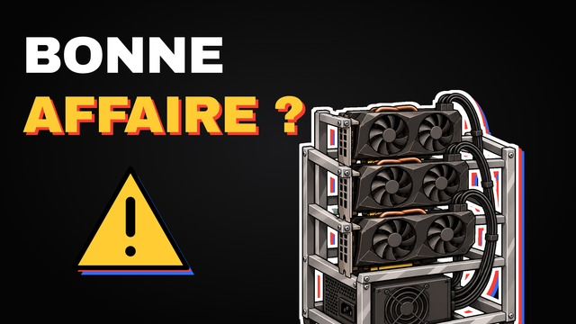
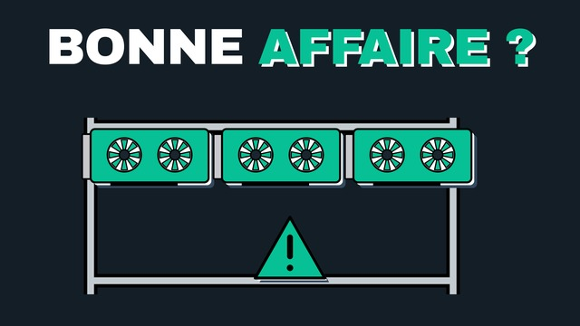
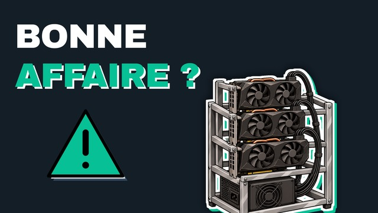
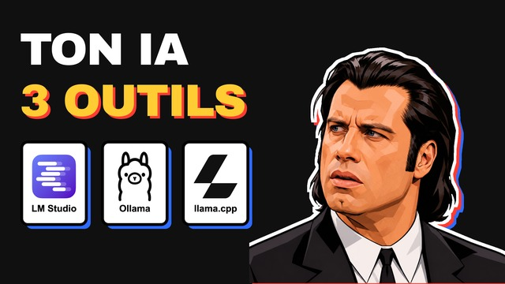
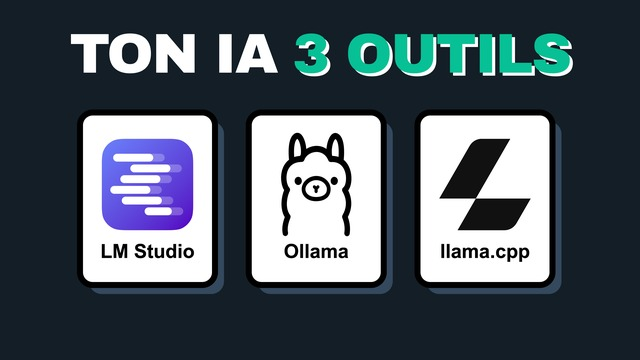
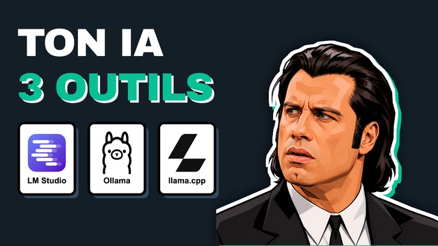
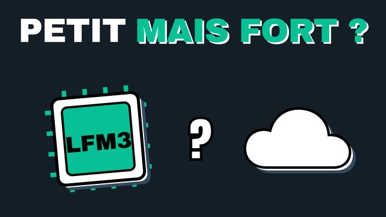